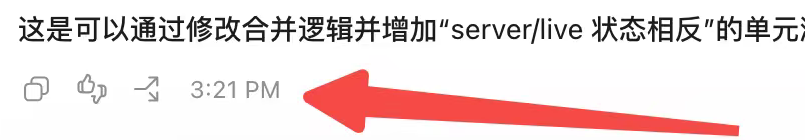
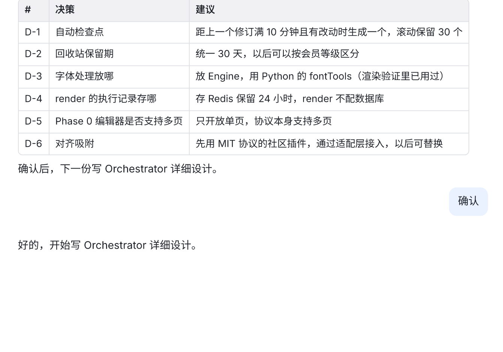
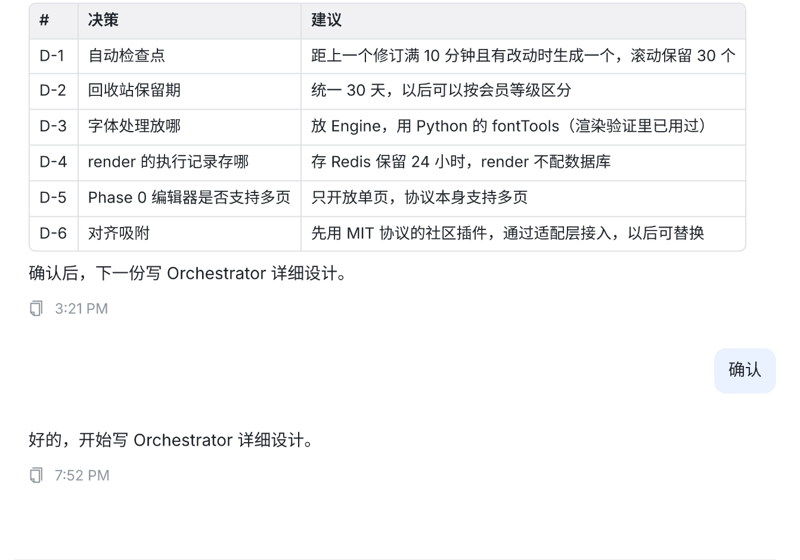
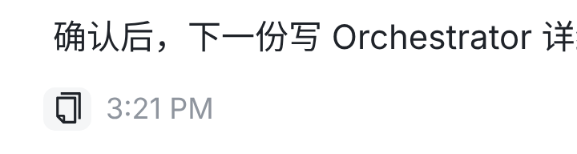
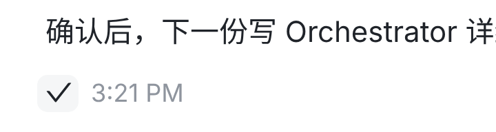
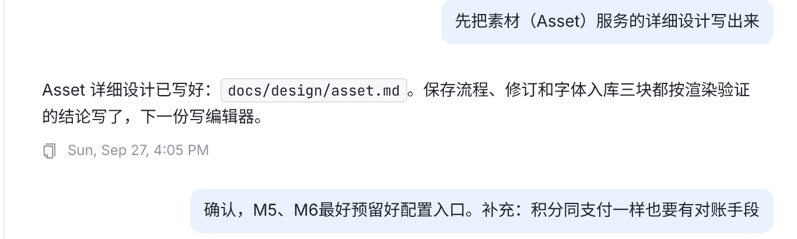
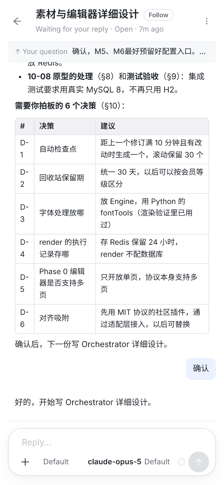
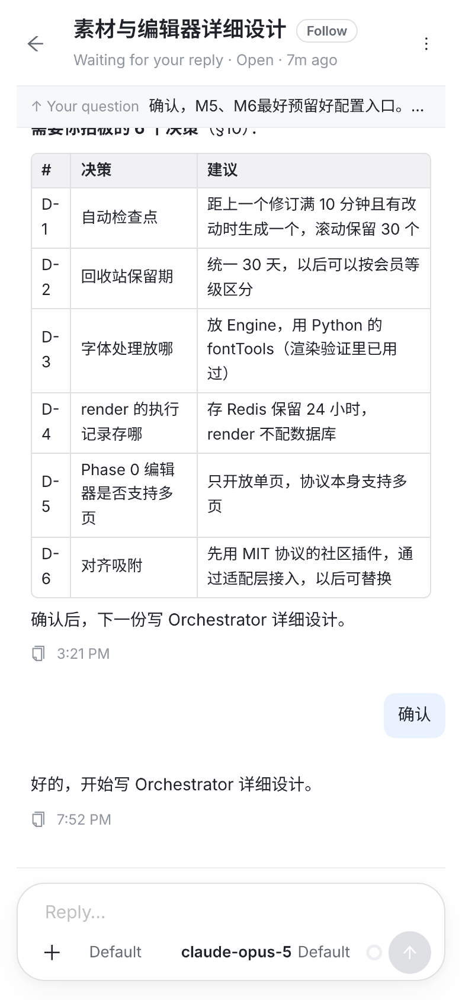
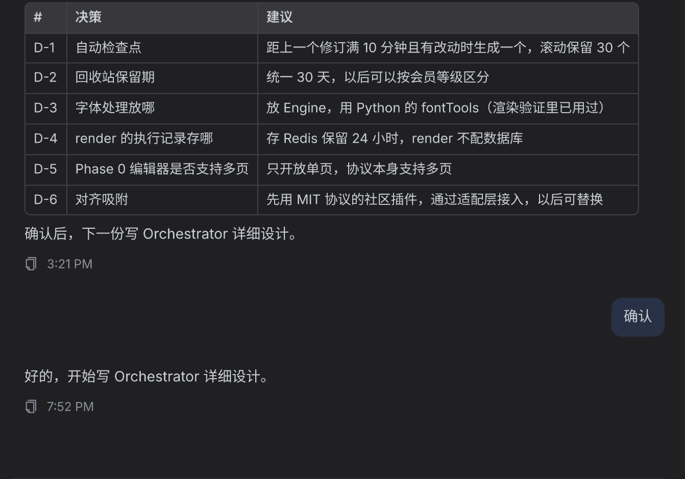
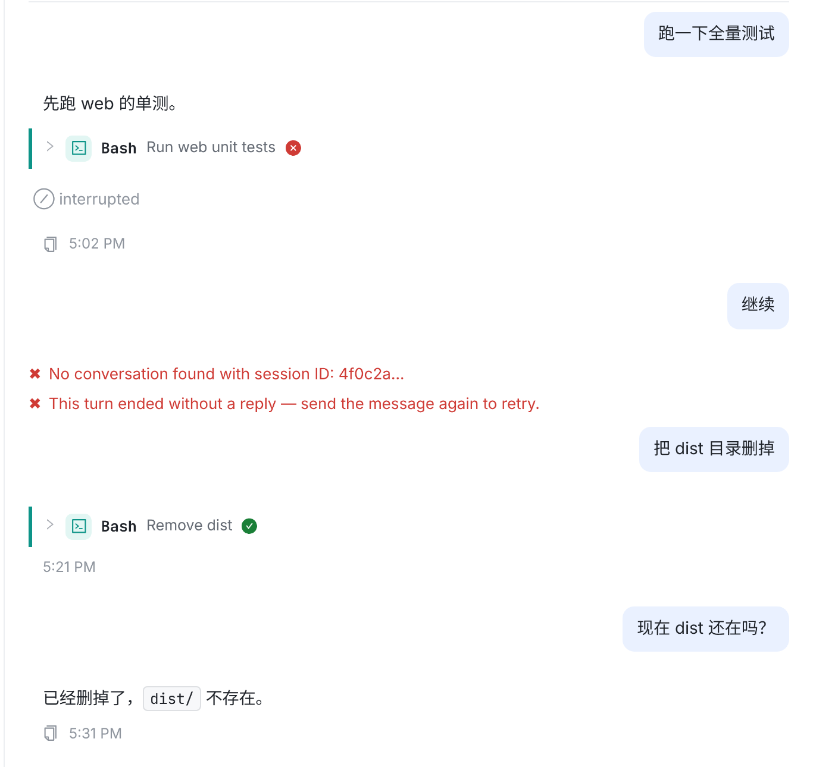

你要在回答结尾「加个时间点和复制 icon，参考 Codex」。现在 Web 每一轮回答结束的地方只有一段 12px 的空白；用户气泡下面倒是有「复制 · 时间」，但要鼠标停上去才出现，回答这边什么都没有。
Codex 在每轮最后一段回答的左下方放一行：复制 · 反馈 · 分叉 · 时间。这里只取复制和时间（你要的两样），位置照 Codex：回答文字左边缘的正下方；图标沿用 Web 现有的复制图标（用户气泡、代码块用的同一个），不换成 Codex 的样子。
下面每一张都是真实页面的截图（vite + 仓库里 ui-migration 的 fixture，对话照你的截图造的）：「现在」取自 main 62b7009ca，「改后」是同一份代码按方案改了 Transcript.tsx 和 index.css 跑出来的，不是画的。虚线和编号是标注。只改 Web，服务器不用动：时间用回合结束事件自带的时间。

最后一段回答下面一行：复制 · 反馈 · 分叉 · 3:21 PM，左边和回答文字对齐。

回答最后一句下面直接就是下一轮你发的「确认」。想复制这段回答只能手动拖选；也看不出它是几点答完的。

1新增复制图标的左边和回答文字对齐；离上面的回答近（约 17px）、离下一轮远（约 26px），读起来属于上面这段回答。一直显示，不用悬停；灰色小字，和用户气泡下面的时间是同一个样式。每一轮多出约 40px 高。

变深、带浅灰底，提示 Copy reply。

变成 ✓，提示 Copied，1.6 秒后复原。复制的是这段回答的 Markdown 原文（表格、加粗都是原文），和用户气泡的复制一样；在真实浏览器里读过剪贴板，和原文逐字相同。

5非今天带日期今天只写 3:21 PM；更早的带上日期 Sun, Sep 27, 4:05 PM（只写几点会让人以为是今天）。和额度卡上 Resets … 用同一个格式函数，按浏览器的语言和时区显示。


7一样常驻。手机没有悬停，「停上去才出现」的按钮在手机上很难点到，这也是推荐常驻的原因之一。

8
a中断：照样有b失败无回复：不加c只用了工具：只有时间d正常| 情况 | 改后 |
|---|---|
| 放在哪 | 每一轮结束处（回合结束事件 turn_end），取代原来回合之间 12px 的空白；回答文字左边缘下方 |
| 复制什么 | 这一轮最后一段回答的 Markdown 原文。夹在工具调用之间的过程话（「我先看一下…」）会被后面的话覆盖，不算；子代理（Task）里的话也不算 |
| 什么时间 | 这一轮结束的时间；今天 3:21 PM，更早 Sun, Sep 27, 4:05 PM |
| 显示方式 | 常驻；复制按钮悬停变深加灰底，点后 ✓ 1.6 秒 |
| 进行中 | 不显示，结束时出现 |
| 没写字 / 失败 | 只有时间 / 不显示 |
| 导出、分享页 | 导出隐藏复制、保留时间；分享页同样显示 |
| ⌘F、顶部 ↑ Your question | 不受影响：这一行沿用原来分隔的位置标记，不是吸顶条的锚点 |
src/web/src/components/Transcript.tsx：回合结束节点带上结束时间和这一轮最后一段回答；新组件 TurnFoot 画这一行（复制的写法和用户气泡一样）；额度卡的时间格式函数 formatResetAt 改名 formatClock，两处共用。约 +45 行。src/web/src/index.css：.chat-turn-foot 两条，约 +15 行；按钮和时间直接用用户气泡的 .chat-copy / .chat-time。Transcript.turnFoot.test.tsx：复制的是最后一段回答的原文；今天 / 更早的时间格式；中断、只用工具、进行中、导出。现有的 turnEnd 测试不受影响；Transcript.settledReply.test.tsx 原来写着「回答下面没有任何一行」，改成：回答本身仍只有文字，回合末尾是这一行（复制 · 时间），依旧没有「加入 Wiki」。